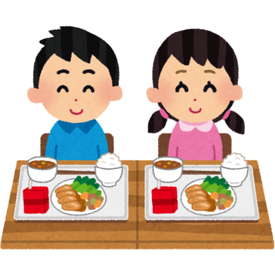

In Japan, food is not just fuel, but also a life lesson. Known as Shokuiku (食育), this philosophy of food education teaches people to eat with balance, gratitude, and awareness. The following practices reflect these values.

Hara Hachi Bun Me (腹八分目) is based on the Confucian teaching where you listen to your body and stop eating before you feel full. This approach holds a number of benefits including:
Eating whole foods, including unpeeled vegetables and whole fish, provides your body with valuable protein, fiber, heart-healthy fats, and essential micronutrients. While completely eliminating processed foods can be difficult in today’s world, reducing your intake can still significantly impact your overall health.
The Japanese diet encourages buying from local farmer’s markets to enjoy fresh, seasonal fruits and vegetables. This practice not only supports local agriculture, but also helps you understand where your food comes from, how it's grown, and what’s currently in season. From juicy summer tomatoes to colorful autumn apples, eating seasonally can help you appreciate the natural rhythms of the year — and develop a deeper connection to your meals.
While a grab-and-go meal is a convenient filling method, it diminishes the pleasure of eating. Sharing meals with family and friends builds camaraderie and can help diversify your food offerings. As Aristotle said, “Man is by nature a social animal."
Learn The Diet